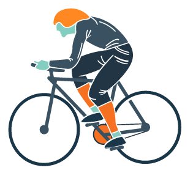

Night Riders Bicycle Repair
Responsive • CSS Animation • Illustrations • SlickWrap.js
My goal for this project was to create a responsive website where all elements were skewed and no elements were straight across. The only plugin I could find, albeit slightly dated, was SlickWrap.js, which was a library that allowed text to wrap into the transparent space of PNG images, thus allowing a similar text wrap to that of print. The most challenging part of the project was getting the text to not only wrap to the slanted top elements, but to also the bottom slanted elements. It was an interesting introduction to jQuery via a hands on approach.
